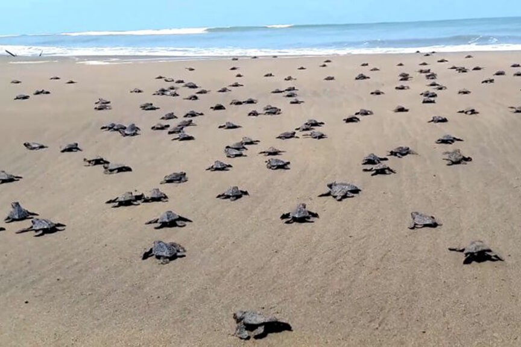

Few activities which is making hatchery world insane

Visitors can watch the young turtles in the aquariums and learn about how they grow from a hatchling to an adult turtle.

Visitors are welcome to take part in the marine release of the young turtles. This is an excellent chance to observe the turtles' natural behavior and help ensure their survival.

The hatchery offers tours and educational activities to inform guests about the value of protecting sea turtles and the dangers they face.